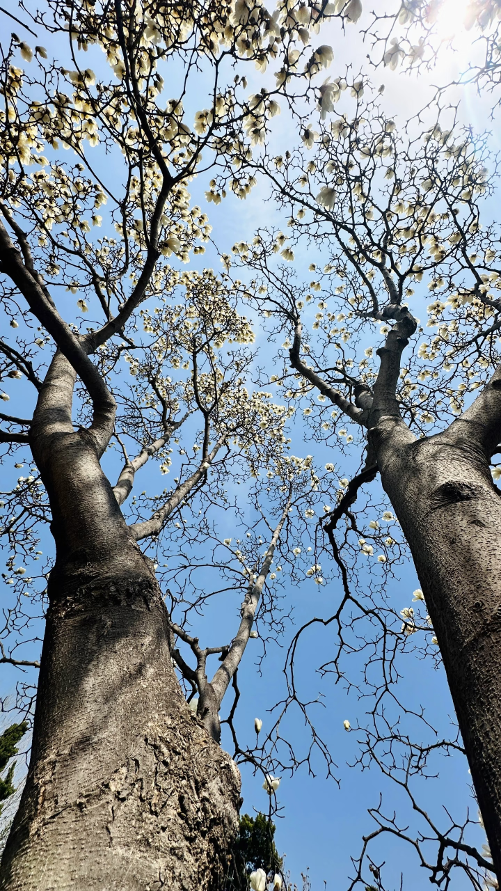
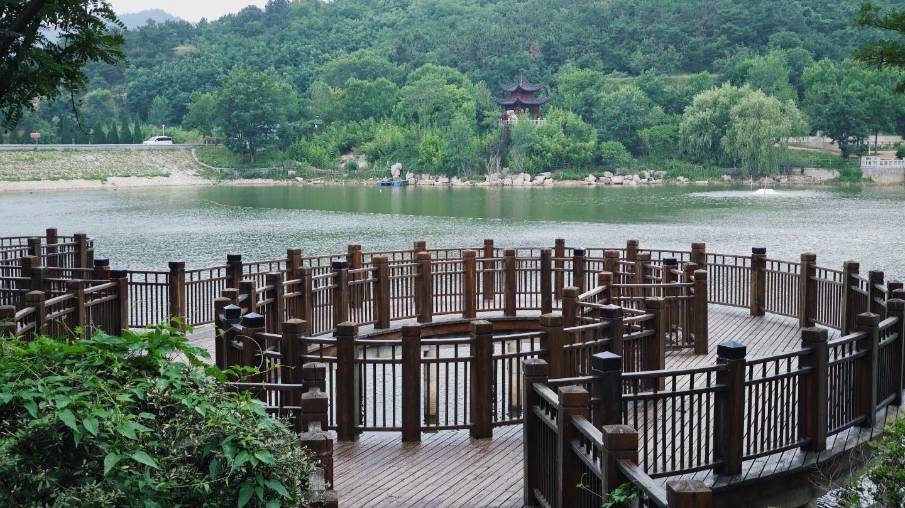

当春风拂过校园的每一寸土地，沉睡了一整个寒冬的生机便在枝头悄然苏醒。主干道两侧的玉兰花率先绽放，乳白与淡紫的花瓣在晨光中舒展，像一群振翅欲飞的白鸽，将清甜的香气送进每一个路过的学子心底。沿着樱花大道缓步前行，粉白的花簇如云似霞，风过处落英缤纷，铺就一条浪漫的花径，连空气里都弥漫着春日的温柔。人工湖畔的垂柳抽出嫩黄的新芽，细长的枝条垂落水面，在微波中漾开圈圈涟漪，倒映着蓝天与飞鸟，也倒映着学子们晨读的身影。湖心岛上的迎春花缀满枝头，明黄的花朵像一串串小太阳，点亮了整个湖面的生机。午后的阳光透过梧桐的新叶，在地面筛下斑驳的光影，三三两两的学子坐在长椅上，或捧书阅读，或轻声交谈，青春的气息与春日的生机在此刻完美交融。校园的每一处角落，都在春风里舒展着最美的姿态，用繁花与绿意，书写着独属于我们的青春序章。
春日的校园，不仅有繁花似锦的绚烂，更有润物无声的温柔。清晨的薄雾还未散尽，图书馆前的草坪上便已缀满晶莹的露珠，在朝阳下折射出细碎的光芒，像撒了一地的星辰。操场边的海棠花热烈绽放，粉艳的花朵簇拥在枝头，与少年们奔跑的身影相映成趣，汗水与花香交织，是青春最鲜活的模样。实验楼后的竹林在春雨后愈发青翠，挺拔的竹干直指苍穹，竹叶上的水珠滚落，滴答声在静谧的午后格外清晰，仿佛在诉说着坚韧与向上的力量。就连教学楼的窗台，也被同学们精心摆放的盆栽点缀得生机盎然，多肉的饱满、月季的娇艳、绿萝的舒展，让每一间教室都充满了春日的暖意。春日的校园，是一幅流动的画卷，每一处风景都藏着成长的力量，每一缕春风都载着梦想的方向，陪伴着我们在最美的年华里，奔赴一场盛大的成长。


校园的人文景观，是学校精神与文化的具象载体，每一处都承载着深厚的底蕴与温度。校史馆里，泛黄的老照片、珍贵的实物展品，串联起学校从创办到发展的百年历程，诉说着一代代教育者的坚守与奉献，也激励着每一位学子传承校训精神，续写校园的辉煌。图书馆作为校园的文化地标，不仅有丰富的馆藏资源，更有静谧的学习氛围，落地窗外的春日盛景与窗内的伏案身影相映，让知识与自然在此刻完美交融。校训石静静伫立在校园广场中央，鲜红的字体在春日的阳光下熠熠生辉，成为每一位新生入学、每一位毕业生离校的打卡地标，承载着学校对学子们的殷切期望。体育馆内，少年们挥洒汗水、奋勇拼搏的身影，是校园人文精神最鲜活的注脚，彰显着青春的力量与担当。这些人文景观，与春日的自然风光交相辉映，共同构成了我们心中最美的校园。